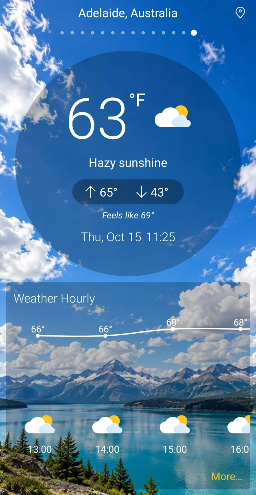
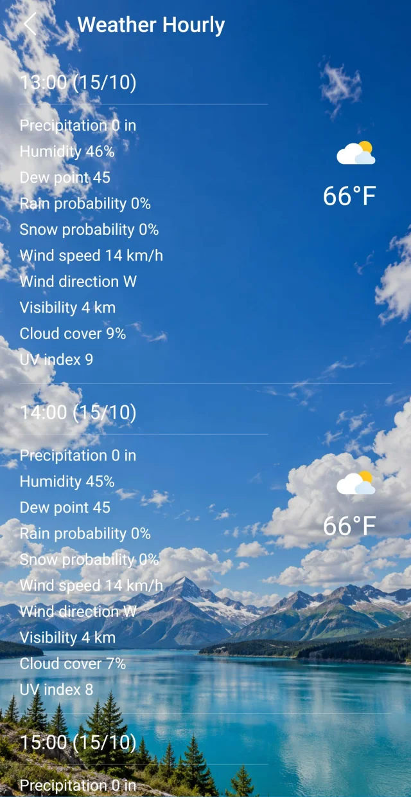
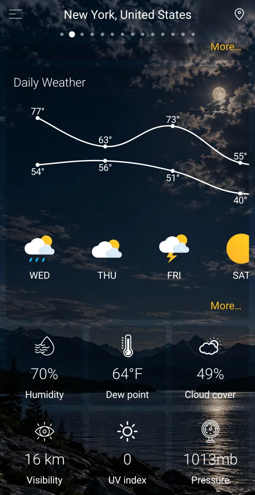
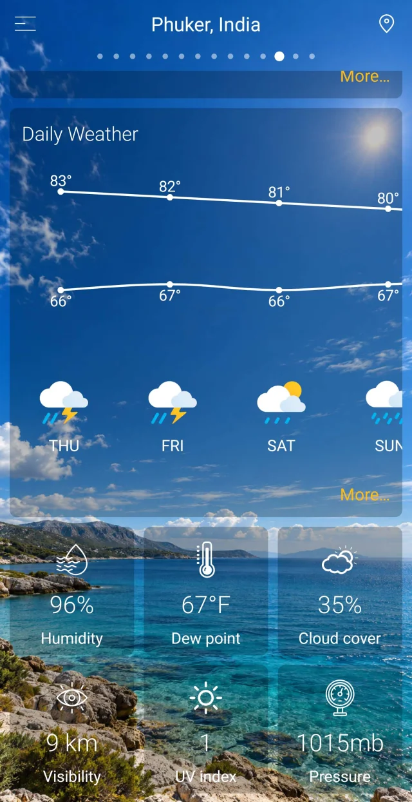
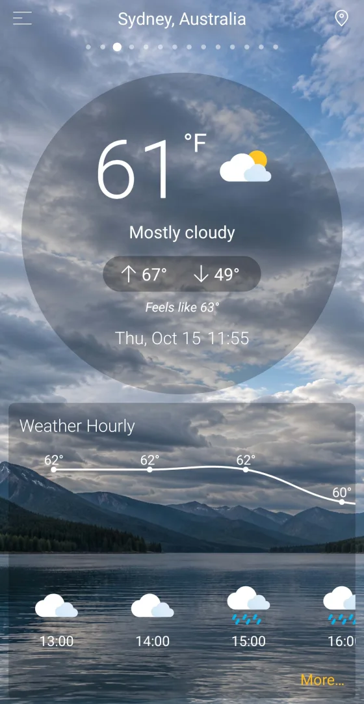
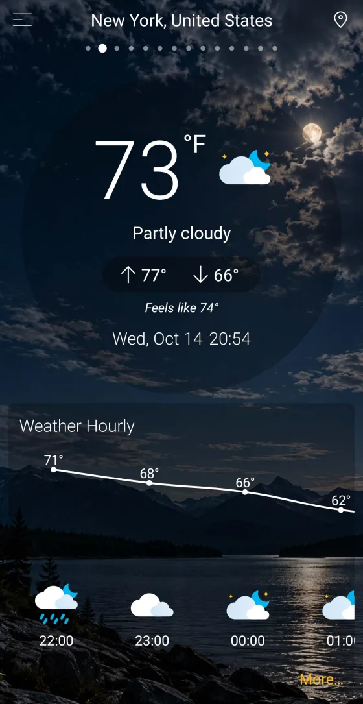

Weather, at home
Choose from seven weather widgets to bring the forecast to your home screen. Availability and sizing depend on your launcher.
A little closer to the outdoors
The morning walk. The weekend away. The places you call home. Meet the forecast that helps you see what’s ahead.

Small checks. Better plans.
For the routines you know.
And the days you don’t.
A quick glance before you leave, or a closer look before you plan. Weather World brings the useful details together.
Check the temperature, what it feels like, and the day’s highs and lows.
Follow the hourly outlook and explore daily forecasts with temperature charts.
Take a closer look at humidity, wind, precipitation, visibility and UV conditions.
A closer look
Explore real screens from Weather World. From a first glance to the finer details, the weather stays at the centre.
Screenshots show recorded example conditions, not a live forecast. Forecasts vary by location and provider availability.





Near, far, familiar
Keep home close. Look ahead to your next destination. Save the cities you care about and move between their forecasts.
Search for a city yourself, or choose to use your device’s location. Day and night scenery gives each forecast a sense of place.
Get to know Weather WorldFits into your day
Choose from seven weather widgets to bring the forecast to your home screen. Availability and sizing depend on your launcher.
Choose Celsius or Fahrenheit, so the temperature feels familiar wherever you look.
Use saved cities without location access, and manage optional permissions in your device settings.
Here to help
Looking for a location, setting up a widget, or need help with a purchase? Start with our guide or get in touch.
Contact support ahmetefeerdal3@gmail.comNo. You can search for and save a city manually. Location access is optional and can be managed in Android Settings.
Weather data is provided by AccuWeather. Forecasts are estimates, and fresh weather information requires an internet connection.
Open your Android launcher’s widget picker, find Weather World, and choose a widget. The exact steps and available space depend on your device and launcher.
Read our Privacy Policy and Terms. The Help guide explains purchase restoration and subscriptions. Any available paid offers are shown in the app and confirmed by the store.